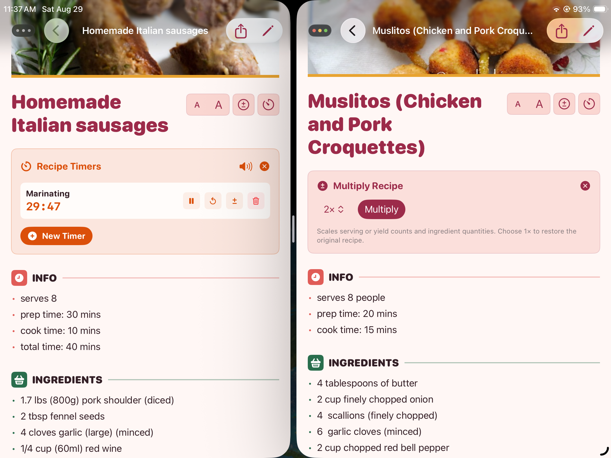
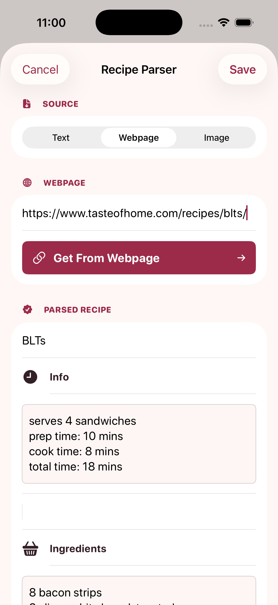
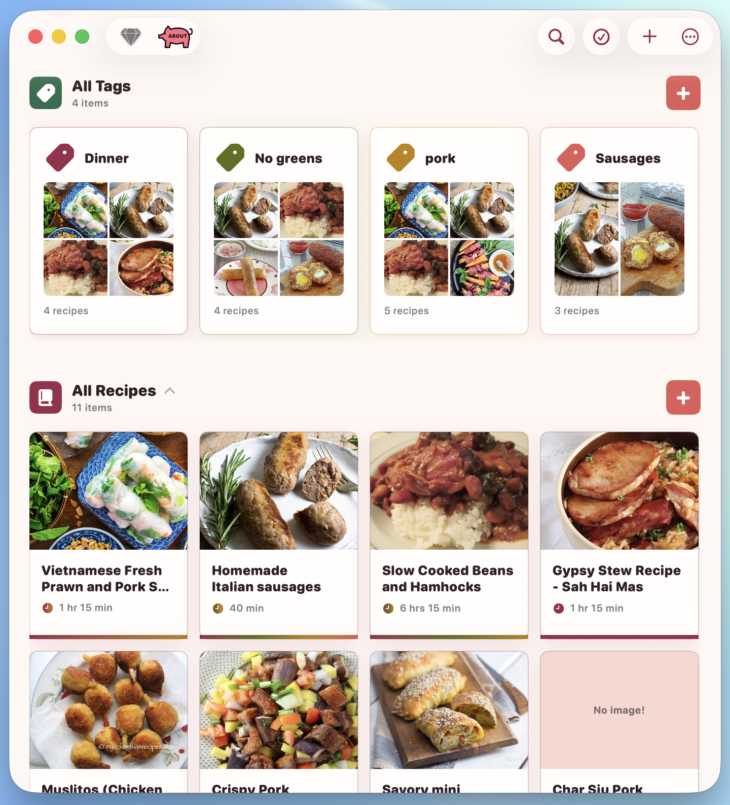
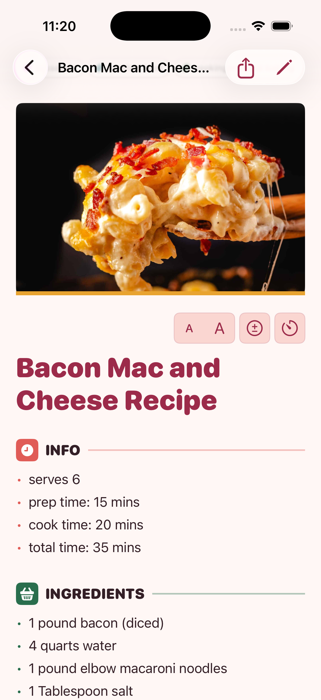
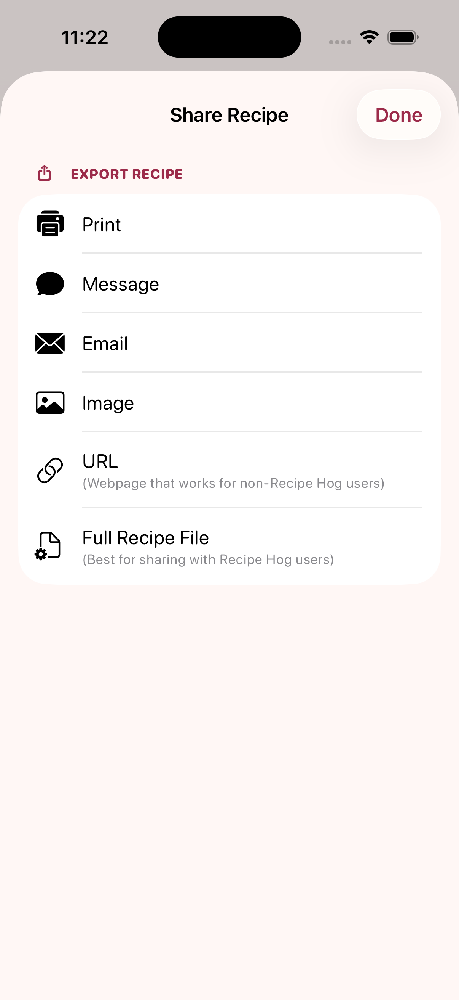
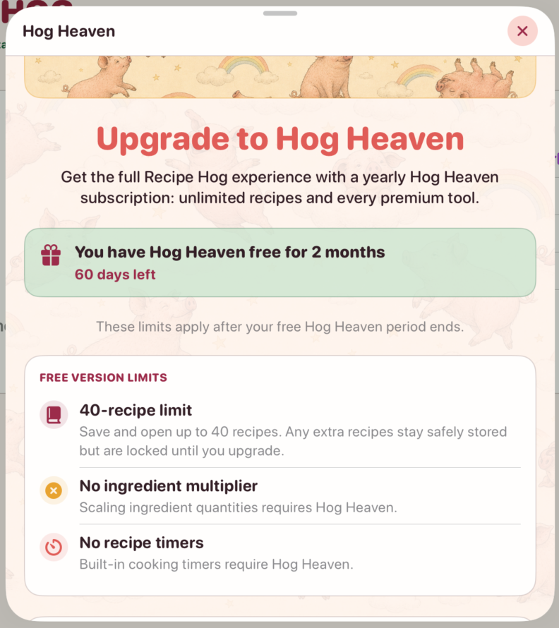
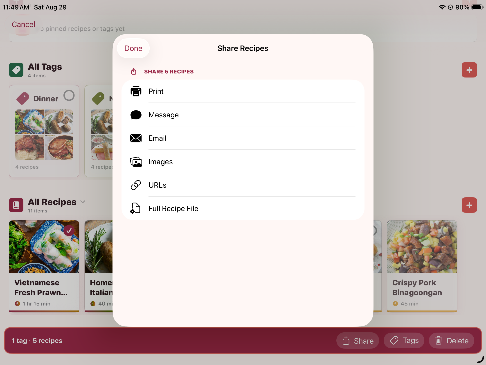
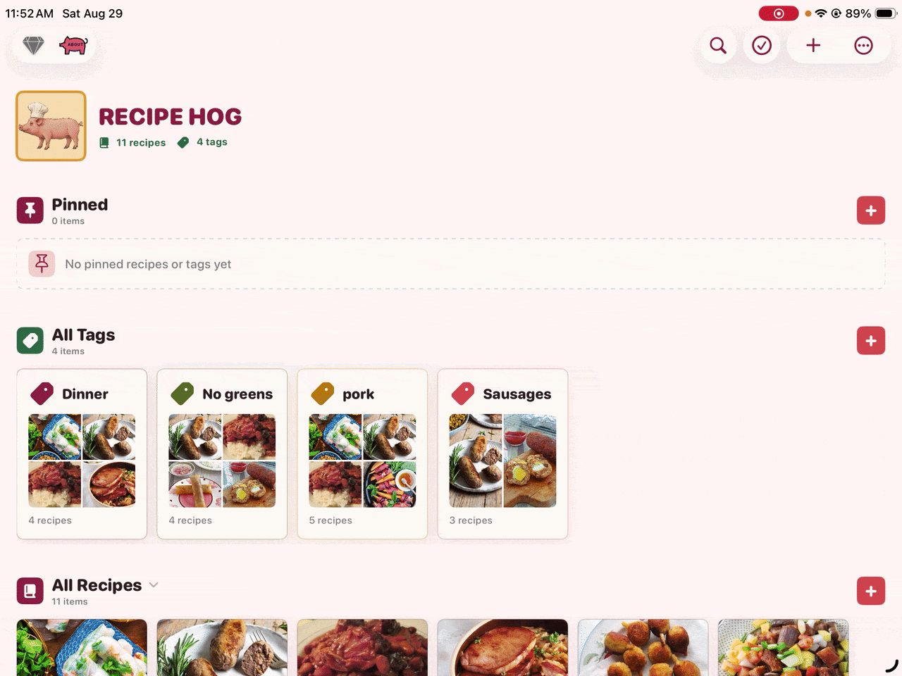

Scale ingredients and run timers
Adjust ingredient quantities without changing the saved recipe, then create cooking timers directly from instructions.

For iPhone, iPad, and Mac. Hog Heaven is $1.99/year in the U.S.; local prices vary. Renews automatically unless canceled through the App Store.
RECIPE LIBRARY · OFFLINE-FIRST COOKING
Recipe Hog is a native recipe library that turns handwritten cards, printed pages, websites, pasted text, and your own ideas into one organized collection. Search it, cook from it, and use saved recipes offline across iPhone, iPad, and Mac. Web imports, remote feeds, iCloud sync, and App Store verification require an internet connection.
No Recipe Hog account. No advertising or third-party analytics SDKs. Your library stays local and, when enabled and available, syncs through your private iCloud database.
FROM ANY SOURCE TO YOUR LIBRARY
Build a useful collection from the recipes you already have, wherever they happen to live.
Create a recipe manually; paste text or a webpage; import Safari bookmarks or Recipe Hog files; add a webpage from Safari’s share sheet; or scan a printed or photographed recipe with on-device OCR.

Use unlimited color-coded tags, search, and private ratings to keep a growing collection easy to navigate.

Read ingredients and instructions in a clean cooking view, with Hog Heaven tools for scaling quantities and running timers.

Print it, send it by message or email, create an image or link, or export the complete recipe for another Recipe Hog user.

MADE FOR THE WHOLE RECIPE
Adjust ingredient quantities without changing the saved recipe, then create cooking timers directly from instructions.

Remove the 40-recipe limit and unlock the ingredient multiplier and built-in cooking timers with a $1.99/year Hog Heaven subscription in the U.S. Local prices vary.

Share individual recipes, export or save your library, and use Apple’s system controls to print or send recipes where you choose.

Tap the playful home action to fetch a random pork recipe, review it, and accept it before anything is added to your library.

New installations receive 2 months (60 days) of Hog Heaven free without starting a subscription or being charged automatically. After that, free access lets you save and open up to 40 recipes with unlimited tags, but without the ingredient multiplier or cooking timers. Extra recipes remain safely stored and are locked until you upgrade. Hog Heaven removes these limits for $1.99/year in the U.S.; local prices vary and the subscription renews automatically unless canceled through the App Store.
YOUR RECIPES, FINALLY TOGETHER
Capture it, tag it, find it, cook it, and keep the whole library private across your Apple devices.